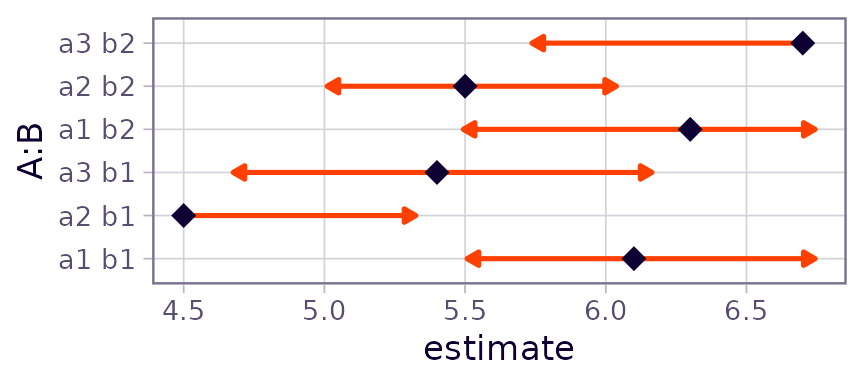
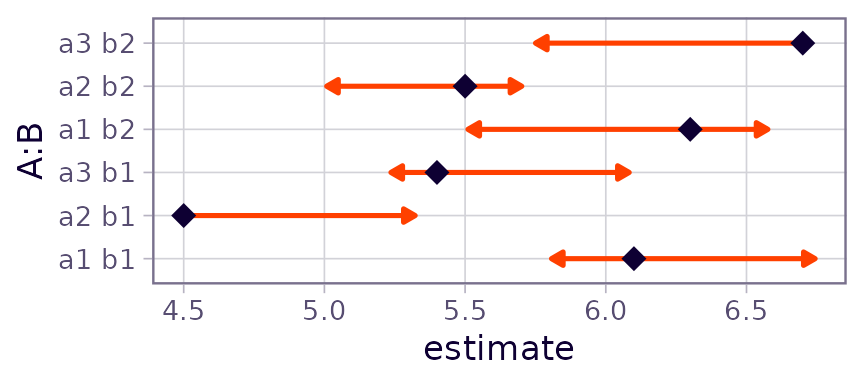
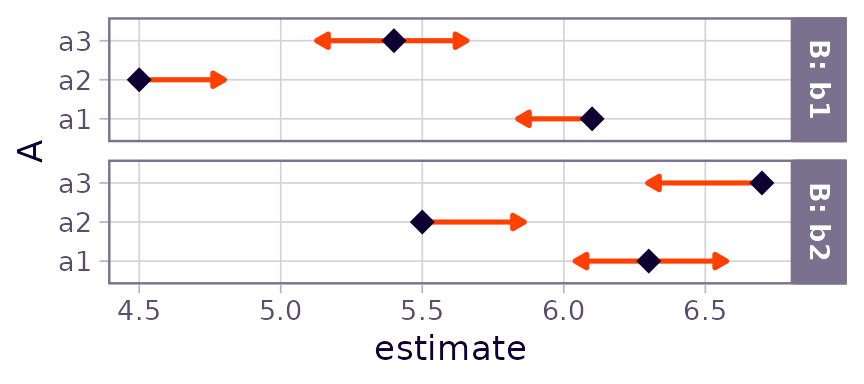
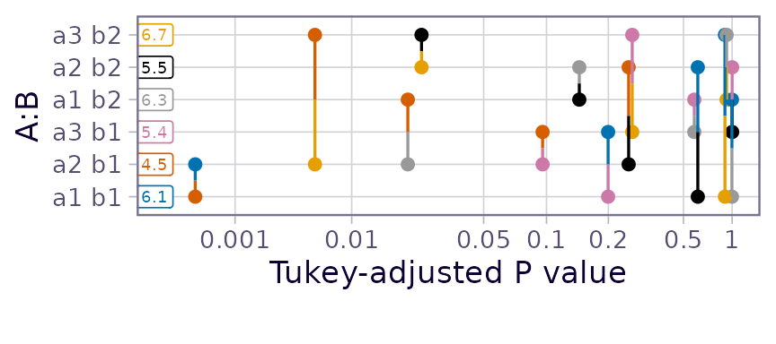

Explanations supplement
emmeans package, Version 1.11.2.80001
Source:vignettes/xplanations.Rmd
xplanations.RmdThis vignette provides additional documentation for some methods implemented in the emmeans package.
Sub-models
Estimated marginal means (EMMs) and other statistics computed by the
emmeans package are model-based: they depend
on the model that has been fitted to the data. In this section we
discuss a provision whereby a different underlying model may be
considered. The submodel option in update()
can project EMMs and other statistics to an alternative universe where a
simpler version of the model has been fitted to the data. Another way of
looking at this is that it constrains certain external effects to be
zero – as opposed to averaging over them as is otherwise done for
marginal means.
Two things to know before getting into details:
- The
submodeloption uses information from the fixed-effects portion of the model matrix - Not all model classes are supported for the
submodeloption.
Now some details. Suppose that we have a fixed-effects model matrix
\(X\), and let \(X_1\) denote a sub-matrix of \(X\) whose columns correspond to a specified
sub-model. (Note: if there are weights, use \(X = W^{1/2}X^*\), where \(X^*\) is the model matrix without the
weights incorporated.) The trick we use is what is called the alias
matrix: \(A =
(X_1'X_1)^-X_1'X\) where \(Z^-\) denotes a generalized inverse of
\(Z\). It can be shown that \((X_1'X_1)^-X_1' =
A(X'X)^-X'\); thus, in an ordinary fixed-effects
regression model, \(b_1 = Ab\) where
\(b_1\) and \(b\) denote the regression coefficients for
the sub-model and full model, respectively. Thus, given a matrix \(L\) such that \(Lb\) provides estimates of interest for the
full model, the corresponding estimates for the sub-model are \(L_1b_1\), where \(L_1\) is the sub-matrix of \(L\) consisting of the columns corresponding
to the columns of \(X_1\). Moreover,
\(L_1b_1 = L_1(Ab) = (L_1A)b\); that
is, we can replace \(L\) by \(L_1A\) to obtain estimates from the
sub-model. That’s all that update(..., submodel = ...)
does.
Here are some intuitive observations:
- Consider the excluded effects, \(X_2\), consisting of the columns of \(X\) other than \(X_1\). The corresponding columns of the alias matrix are regression coefficients treating \(X_2\) as the response and \(X_1\) as the predictors.
- Thus, when we obtain predictions via these aliases, we are predicting the effects of \(X_2\) based on \(X_1\).
- The columns of the new linear predictor \(\tilde L = L_1A\) depend only on the columns of \(L_1\), and hence not on other columns of \(L\).
These three points provide three ways of saying nearly the same thing, namely that we are excluding the effects in \(X_2\). Note that in a rank-deficient situation, there are different possible generalized inverses, and so in (1), \(A\) is not unique. However, the predictions in (2) are unique. In ordinary regression models, (1), (2), and (3) all apply and will be the same as predictions from re-fitting the model with model matrix \(X_1\); however, in generalized linear models, mixed models, etc., re-fitting will likely produce somewhat different results. That is because fitting such models involves iterative weighting, and the re-fitted models will probably not have the same weights. However, point (3) will still hold: the predictions obtained with a submodel will involve only the columns of \(L_1\) and hence constrain all effects outside of the sub-model to be zero. Therefore, when it really matters to get the correct estimates from the stated sub-model, the user should actually fit that sub-model unless the full model is an ordinary linear regression.
A technicality: Most writers define the alias matrix as \((X_1'X_1)^-X_1'X_2\), where \(X_2\) denotes that part of \(X\) that excludes the columns of \(X_1\). We are including all columns of \(X\) here just because it makes the notation very simple; the \(X_1\) portion of \(X\) just reduces to the identity (at least in the case where \(X_1\) is full-rank).
A word on computation: Like many matrix expressions, we do not
compute \(A\) directly as shown.
Instead, we use the QR decomposition of \(X_1\), obtainable via the R call
Z <- qr(X1). Then the alias matrix is computed via
A <- qr.coef(Z, X). In fact, nothing changes if we use
just the \(R\) portion of \(X = QR\), saving us both memory and
computational effort. The exported function .cmpMM()
extracts this \(R\) matrix, taking care
of any pivoting that might have occurred. And in an lm
object, the QR decomposition of \(X\)
is already saved as a slot. The qr.coef() function works
just fine in both the full-rank and rank-deficient cases, but in the
latter situation, some elements of A will be
NA; those correspond to “excluded” predictors, but that is
another way of saying that we are constraining their regression
coefficients to be zero. Thus, we can easily clean that up via
A[is.na(A)] <- 0.
If we specify submodel = "minimal", the software figures
out the sub-model by extracting terms involving only factors that have
not already been averaged over. If the user specifies
submodel = "type2", an additional step is performed: Let
\(X_1\) have only the highest-order
effect in the minimal model, and \(X_0\) denote the matrix of all columns of
\(X\) whose columns do not contain the
effect in \(X_1\). We then replace
\(Z\) by the QR decomposition of \([I - X_0(X_0'X_0)^-X_0']X_1^*\).
This projects \(X_1^*\) onto the null
space of \(X_0\). The net result is
that we obtain estimates of just the \(X_1^*\) effects, after adjusting for all
effects that don’t contain it (including the intercept if present). Such
estimates have very limited use in data description, but provide a kind
of “Type II” analysis when used in conjunction with
joint_tests(). The "type2" calculations
parallel those documented
by SAS for obtaining type II estimable functions in SAS
PROC GLM. However, we (as well as
car::Anova()) define “contained” effects differently from
SAS, treating covariates no differently than factors.
A note on multivariate models
Recall that emmeans generates a constructed factor
for the levels of a multivariate response. That factor (or factors) is
completely ignored in any sub-model calculations. The \(X\) and \(X_1\) matrices described above involve only
the predictors in the right-hand side of the model equation . The
multivariate response “factor” implicitly interacts with everything in
the right-hand-side model; and the same is true of any sub-model. So it
is not possible to consider sub-models where terms are omitted from
among those multivariate interactions (note that it is also impossible
to fit a multivariate sub-model that excludes those interactions). The
only way to remove consideration of multivariate effects is to average
over them via a call to emmeans().
Comparison arrows
The plot() method for emmGrid objects
offers the option comparisons = TRUE. If used, the software
attempts to construct “comparison arrows” whereby two estimated marginal
means (EMMs) differ significantly if, and only if, their respective
comparison arrows do not overlap. In this section, we explain how these
arrows are obtained.
First, please understand these comparison arrows are decidedly not the same as confidence intervals. Confidence intervals for EMMs are based on the statistical properties of the individual EMMs, whereas comparison arrows are based on the statistical properties of differences of EMMs.
Let the EMMs be denoted \(m_1, m_2, ..., m_k\). For simplicity, let us assume that these are ordered: \(m_1 \le m_2 \le \cdots \le m_k\). Let \(d_{ij} = m_j - m_i\) denote the difference between the \(i\)th and \(j\)th EMM. Then the \((1 - \alpha)\) confidence interval for the true difference \(\delta_{ij} = \mu_j - \mu_i\) is \[ d_{ij} - e_{ij}\quad\mbox{to}\quad d_{ij} + e_{ij} \] where \(e_{ij}\) is the “margin of error” for the difference; i.e., \(e_{ij} = t\cdot SE(d_{ij})\) for some critical value \(t\) (equal to \(t_{\alpha/2}\) when no multiplicity adjustment is used). Note that \(d_{ij}\) is statistically significant if, and only if, \(d_{ij} > e_{ij}\).
Now, how to get the comparison arrows? These arrows are plotted with origins at the \(m_i\); we have an arrow of length \(L_i\) pointing to the left, and an arrow of length \(R_i\) pointing to the right. To compare EMMs \(m_i\) and \(m_j\) (and remembering that we are supposing that \(m_i \le m_j\)), we propose to look to see if the arrows extending right from \(m_i\) and left from \(m_j\) overlap or not. So, ideally, if we want overlap to be identified with statistical non-significance, we want \[ R_i + L_j = e_{ij} \quad\mbox{for all } i < j \]
If we can do that, then the two arrows will overlap if, and only if, \(d_{ij} < e_{ij}\).
This is easy to accomplish if all the \(e_{ij}\) are equal: just set all \(L_i = R_j = \frac12e_{12}\). But with differing \(e_{ij}\) values, it may or may not even be possible to obtain suitable arrow lengths.
The code in emmeans uses an ad hoc weighted regression method to solve the above equations. We give greater weights to cases where \(d_{ij}\) is close to \(e_{ij}\), because those are the cases where it is more critical that we get the lengths of the arrows right. Once the regression equations are solved, we test to make sure that \(R_i + L_j < d_{ij}\) when the difference is significant, and \(\ge d_{ij}\) when it is not. If one or more of those checks fails, a warning is issued.
That’s the essence of the algorithm. Note, however, that there are a few complications that need to be handled:
- For the lowest EMM \(m_1\), \(L_1\) is completely arbitrary because there are no right-pointing arrows with which to compare it; in fact, we don’t even need to display that arrow. The same is true of \(R_k\) for the largest EMM \(m_k\). Moreover, there could be additional unneeded arrows when other \(m_i\) are equal to \(m_1\) or \(m_k\).
- Depending on the number \(k\) of EMMs and the number of tied minima and maxima, the system of equations could be under-determined, over-determined, or just right.
- It is possible that the solution could result in some \(L_i\) or \(R_j\) being negative. That would result in an error.
In summary, the algorithm does not always work (in fact it is possible to construct cases where no solution is possible). But we try to do the best we can. The main reason for trying to do this is to encourage people to not ever use confidence intervals for the \(m_i\) as a means of testing the comparisons \(d_{ij}\). That is almost always incorrect.
What is better yet is to simply avoid using comparison arrows
altogether and use pwpp() or pwpm() to display
the P values directly.
Examples and tests
Here is a constructed example with specified means and somewhat unequal SEs
m = c(6.1, 4.5, 5.4, 6.3, 5.5, 6.7)
se2 = c(.3, .4, .37, .41, .23, .48)^2
lev = list(A = c("a1","a2","a3"), B = c("b1", "b2"))
foo = emmobj(m, diag(se2), levels = lev, linfct = diag(6))
plot(foo, CIs = FALSE, comparisons = TRUE)## Warning: `aes_()` was deprecated in ggplot2 3.0.0.
## ℹ Please use tidy evaluation idioms with `aes()`
## ℹ The deprecated feature was likely used in the emmeans package.
## Please report the issue at <https://github.com/rvlenth/emmeans/issues>.
## This warning is displayed once every 8 hours.
## Call `lifecycle::last_lifecycle_warnings()` to see where this warning was
## generated.
This came out pretty well. But now let’s keep the means and SEs the
same but make them correlated. Such correlations happen, for example, in
designs with subject effects. The function below is used to set a
specified intra-class correlation, treating A as a
within-subjects (or split-plot) factor and B as a
between-subjects (whole-plot) factor. We’ll start with a correlation of
0.3.
mkmat <- function(V, rho = 0, indexes = list(1:3, 4:6)) {
sd = sqrt(diag(V))
for (i in indexes)
V[i,i] = (1 - rho)*diag(sd[i]^2) + rho*outer(sd[i], sd[i])
V
}
# Intraclass correlation = 0.3
foo3 = foo
foo3@V <- mkmat(foo3@V, 0.3)
plot(foo3, CIs = FALSE, comparisons = TRUE)Same with intraclass correlation of 0.6:
foo6 = foo
foo6@V <- mkmat(foo6@V, 0.6)
plot(foo6, CIs = FALSE, comparisons = TRUE)## Warning: Comparison discrepancy in group "1", a1 b1 - a2 b2:
## Target overlap = 0.443, overlap on graph = -0.2131
Now we have a warning that some arrows don’t overlap, but should. We can make it even worse by upping the correlation to 0.8:
foo8 = foo
foo8@V <- mkmat(foo8@V, 0.8)
plot(foo8, CIs = FALSE, comparisons = TRUE)## Error: Aborted -- Some comparison arrows have negative length!
## (in group "1")Now the solution actually leads to negative arrow lengths.
What is happening here is we are continually reducing the SE of
within-B comparisons while keeping the others the same. These all work
out if we use B as a by variable:
plot(foo8, CIs = FALSE, comparisons = TRUE, by = "B")
Note that the lengths of the comparison arrows are relatively equal
within the levels of B. Or, we can use pwpp()
or pwpm() to show the P values for all comparisons
among the six means:
pwpp(foo6, sort = FALSE)
pwpm(foo6)## a1 b1 a2 b1 a3 b1 a1 b2 a2 b2 a3 b2
## a1 b1 [6.1] <.0001 0.1993 0.9988 0.6070 0.8972
## a2 b1 1.6 [4.5] 0.0958 0.0208 0.2532 0.0057
## a3 b1 0.7 -0.9 [5.4] 0.5788 0.9999 0.2641
## a1 b2 -0.2 -1.8 -0.9 [6.3] 0.1439 0.9204
## a2 b2 0.6 -1.0 -0.1 0.8 [5.5] 0.0245
## a3 b2 -0.6 -2.2 -1.3 -0.4 -1.2 [6.7]
##
## Row and column labels: A:B
## Upper triangle: P values adjust = "tukey"
## Diagonal: [Estimates] (estimate)
## Lower triangle: Comparisons (estimate) earlier vs. laterRelated reading on comparisons
The following reference (as well as some articles referenced therein) have been suggested to me as relating to similar issues:
Franz, V.H., Loftus, G.R. (2012) Standard errors and confidence intervals in within-subjects designs: Generalizing Loftus and Masson (1994) and avoiding the biases of alternative accounts. Psychonomic Bulletin and Review 19, 395-–404. https://doi.org/10.3758/s13423-012-0230-1
Confounded effects in joint tests
When a design has empty cells, this creates estimability issues; and
in the context of joint_tests(), this means that certain
main- and interaction effects cannot be estimated, leading to reduced
degrees of freedom in the joint tests. Instead, the estimable parts of
these lost effects are pooled together into a set of contrasts labeled
(confounded) in the output (as long as
showconf = TRUE). Here is a simple illustration based on
the warpbreaks dataset with the last cell removed.
options(contrasts = c("contr.treatment", "contr.poly")) ## ensure system default
w <- warpbreaks[1:40, ] ### no data for (wool = B, tension = H)
w.lm <- lm(breaks ~ wool * tension, data = w)
w.rg <- ref_grid(w.lm)
(jt <- joint_tests(w.rg))## model term df1 df2 F.ratio p.value note
## tension 1 35 6.064 0.0189 e
## wool:tension 1 35 3.740 0.0613 e
## (confounded) 2 35 2.266 0.1187
##
## e: df1 reduced due to non-estimabilityWith no empty cells, we would have had 1 d.f. for wool,
2 d.f. for tension, and 2 d.f. for
wool:tension, for a total of 5 d.f. (6 cells, 6 - 1 = 5
d.f. for contrasts among them). With the missing cell, we can estimate
only 5 - 1 = 4 d.f. worth of effects, and the (confounding)
part accounts for 2 of them that are not purely main effects nor
interaction effects.
How do we obtain these extra 2 d.f.? Well, first of all, it is easy to obtain a joint test of all comparisons among the cell means
## df1 df2 F.ratio p.value note
## 4 35 4.332 0.0060 e
##
## e: df1 reduced due to non-estimabilityWhat we do is simply pool together all the contrasts that were tested
in jt, and compare them with the above. To do this, we
obtain the estimable functions associated with jt:
(ef <- attr(jt, "est.fcns"))## $tension
## (Intercept) woolB tensionM tensionH woolB:tensionM woolB:tensionH
## [1,] 0 0 0.8944272 0 0.4472136 0
##
## $`wool:tension`
## (Intercept) woolB tensionM tensionH woolB:tensionM woolB:tensionH
## [1,] 0 0 0 0 1 0Then we can get a joint test of all these together via some trickery:
tmp <- w.rg
tmp@linfct <- do.call(rbind, ef) # combine EFs into a matrix
tmp@grid <- tmp@grid[1:2, ] # replace the @linfct and @grid slots
(test.ef <- test(tmp, joint = TRUE)) # -- that's enough to get the test## df1 df2 F.ratio p.value
## 2 35 6.398 0.0043(Note: In case this isn’t obvious, we couldn’t have just pooled
together the F ratios for those effects, because they are type-III tests
which are not necessarily independent.) So now we have
test.all with the 4 d.f. worth of all effects comparing the
cells, and test.ef with just the effects in the top part of
the jt table. We can get the unexplained part of
test.all by d.f.-weighted subtraction:
(test.all$df1 * test.all$F.ratio - test.ef$df1 * test.ef$F.ratio) /
(test.all$df1 - test.ef$df1)## [1] 2.266This gives us the F.ratio shown in the
(confounded) row of the jt results above.
That’s all there is to it!
Intricacies of offsets
Many model-fitting functions provide two ways of specifying model
offsets: in the model formula, or in a separate offset
argument. The purpose of this section is to discuss how to deal with
these in emmeans, and in particular, why we decided to
handle them differently, even though they seem equivalent.
To illustrate, consider the following two models:
require(MASS)
mod1 <- glm(Claims ~ District + Group + Age + offset(log(Holders)),
data = Insurance,
family = poisson)
mod2 <- glm(Claims ~ District + Group + Age,
offset = log(Holders),
data = Insurance,
family = poisson)Both models specify, in different ways, an offset of
log(Holders); and they both have the same regression
coefficients and fitted values.
We do not treat these two models in the same way in
emmeans. In mod1, the offset is out there
as part of the model formula, and so it is treated as such in making
predictions: the linear prediction includes the term
log(Holders), with a regression coefficient of 1. In
mod2, the model formula does not include the variable
Holders, so we don’t use it as a predictor. Instead, we
regard the offset argument as implying that there is a
covariate that is computed in advance of fitting the model, and
constrained to have a regression coefficient of 1. Let’s see how this
plays out by looking at the reference grids:
(rg1 <- ref_grid(mod1))## 'emmGrid' object with variables:
## District = 1, 2, 3, 4
## Group = <1l, 1-1.5l, 1.5-2l, >2l
## Age = <25, 25-29, 30-35, >35
## Holders = 364.98
## Transformation: "log"
(rg2 <- ref_grid(mod2))## 'emmGrid' object with variables:
## District = 1, 2, 3, 4
## Group = <1l, 1-1.5l, 1.5-2l, >2l
## Age = <25, 25-29, 30-35, >35
## .static.offset. = 4.9042
## Transformation: "log"The distinction is in the fourth predictor – in mod1, it
is Holders, and in mod2, it is a generated
covariate named .static.offset.. (We call it a “static”
offset because does not depend on model predictors, whereas
mod1 could be regarded as having a dynamic offset.) In
either case, that fourth variable is set to its mean by default.
Now let’s compare some EMMs:
emmeans(rg1, "Age")## Age emmean SE df asymp.LCL asymp.UCL
## <25 4.43 0.0686 Inf 4.30 4.57
## 25-29 4.24 0.0522 Inf 4.14 4.34
## 30-35 4.09 0.0493 Inf 3.99 4.18
## >35 3.90 0.0264 Inf 3.84 3.95
##
## Results are averaged over the levels of: District, Group
## Results are given on the log (not the response) scale.
## Confidence level used: 0.95
emmeans(rg2, "Age")## Age emmean SE df asymp.LCL asymp.UCL
## <25 3.44 0.0686 Inf 3.30 3.57
## 25-29 3.25 0.0522 Inf 3.14 3.35
## 30-35 3.09 0.0493 Inf 2.99 3.19
## >35 2.90 0.0264 Inf 2.85 2.95
##
## Results are averaged over the levels of: District, Group
## Results are given on the log (not the response) scale.
## Confidence level used: 0.95We don’t get the same estimates. That is because in mod1
(rg1), the offset that is added is \(\log\text{Holders} = \log{364.98} \approx
5.90\), while in mod2 (rg2), the added
offset is \(\text{.static.offset.} \approx
4.90\). Thinking through this, these offsets are the logs of the
arithmetic and geometric means, respectively, of Holders;
and it is the fact that the offset is logged that makes those EMMs
differ.
With Poisson models, we often want to estimate rates rather than counts; and we can do that by specifying an offset of \(\log 1 = 0\) to get a rate per holder:
emmeans(rg1, "Age", offset = 0, type = "response")## Age rate SE df asymp.LCL asymp.UCL
## <25 0.230 0.01580 Inf 0.201 0.264
## 25-29 0.190 0.00993 Inf 0.172 0.211
## 30-35 0.163 0.00805 Inf 0.148 0.180
## >35 0.135 0.00355 Inf 0.128 0.142
##
## Results are averaged over the levels of: District, Group
## Confidence level used: 0.95
## Intervals are back-transformed from the log scaleWe’d get exactly the same estimates using rg2 because in
both cases, we are forcing the offset to be zero.
Finally, suppose we want to use different offsets for each age group.
This is done as follows: For mod1, we compute
mean(Holders) separately for each Age:
emmeans(mod1, "Age", cov.reduce = Holders ~ Age)## Age emmean SE df asymp.LCL asymp.UCL
## <25 2.80 0.0686 Inf 2.66 2.93
## 25-29 3.32 0.0522 Inf 3.22 3.43
## 30-35 3.42 0.0493 Inf 3.33 3.52
## >35 4.96 0.0264 Inf 4.91 5.01
##
## Results are averaged over the levels of: District, Group
## Results are given on the log (not the response) scale.
## Confidence level used: 0.95For mod2, Holders is not considered a
predictor, and instead we need separate mean offsets:
emmeans(mod2, "Age", cov.reduce = .static.offset. ~ Age)## Age emmean SE df asymp.LCL asymp.UCL
## <25 2.15 0.0686 Inf 2.02 2.29
## 25-29 2.90 0.0522 Inf 2.79 3.00
## 30-35 3.04 0.0493 Inf 2.95 3.14
## >35 4.58 0.0264 Inf 4.53 4.63
##
## Results are averaged over the levels of: District, Group
## Results are given on the log (not the response) scale.
## Confidence level used: 0.95In both models, the EMMs increase rather than decrease with age, reflecting larger numbers of holders as age increases.